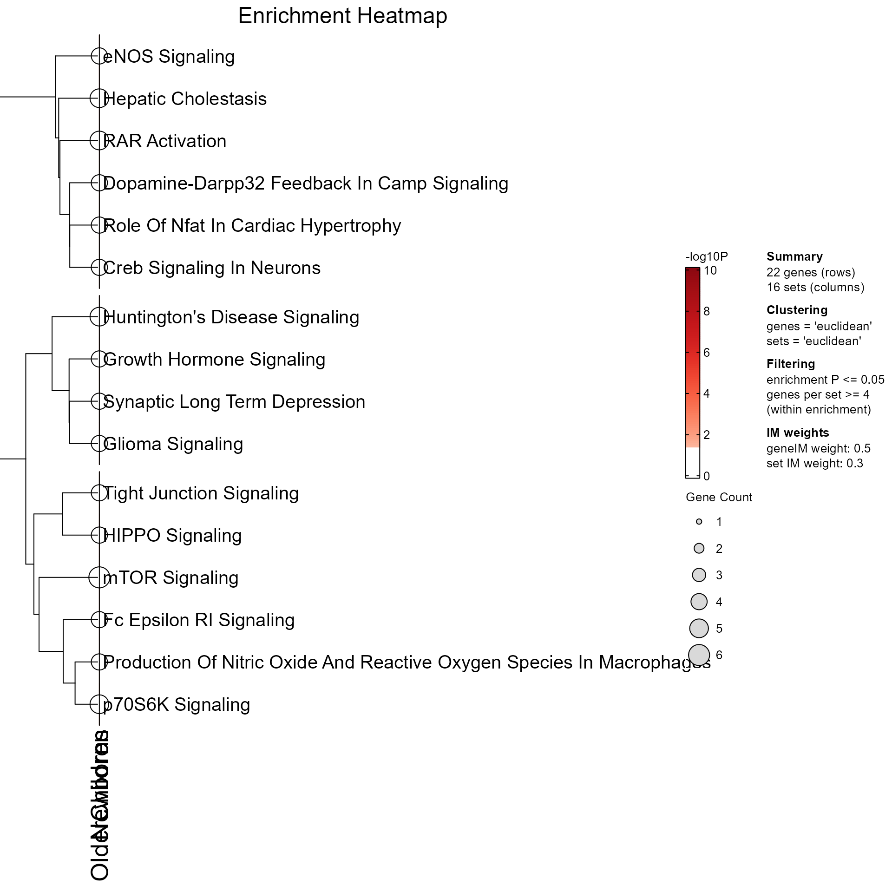
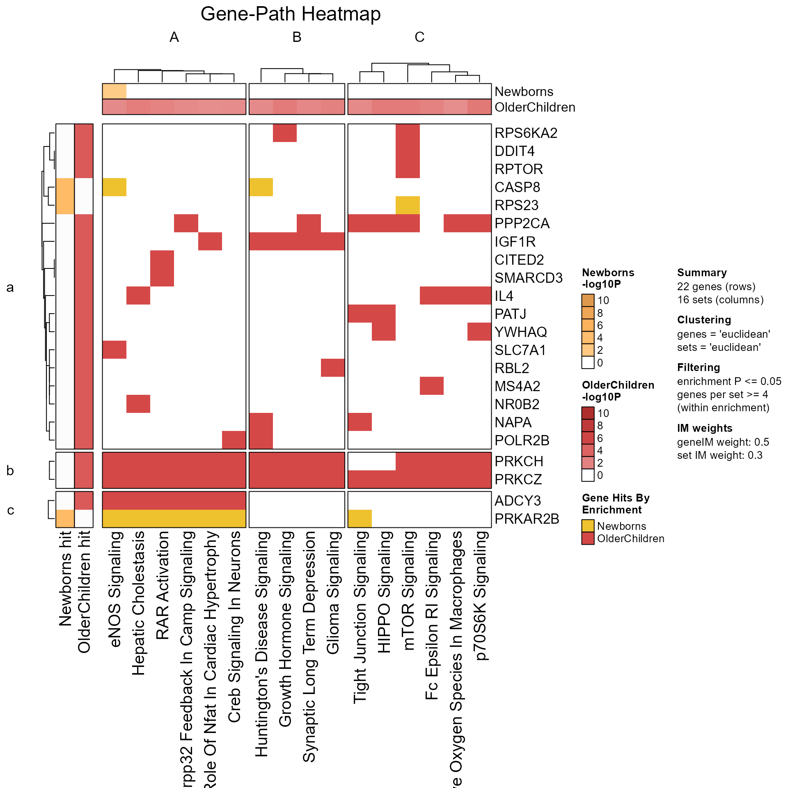
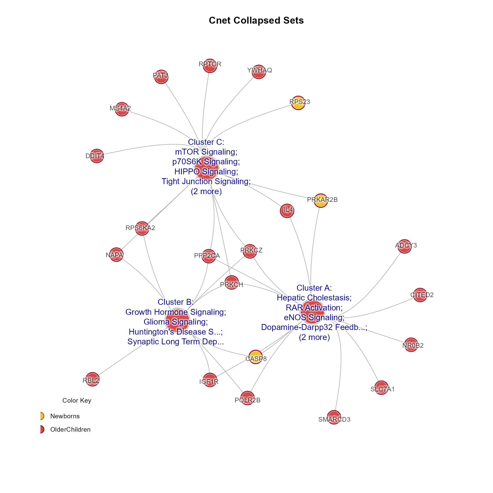
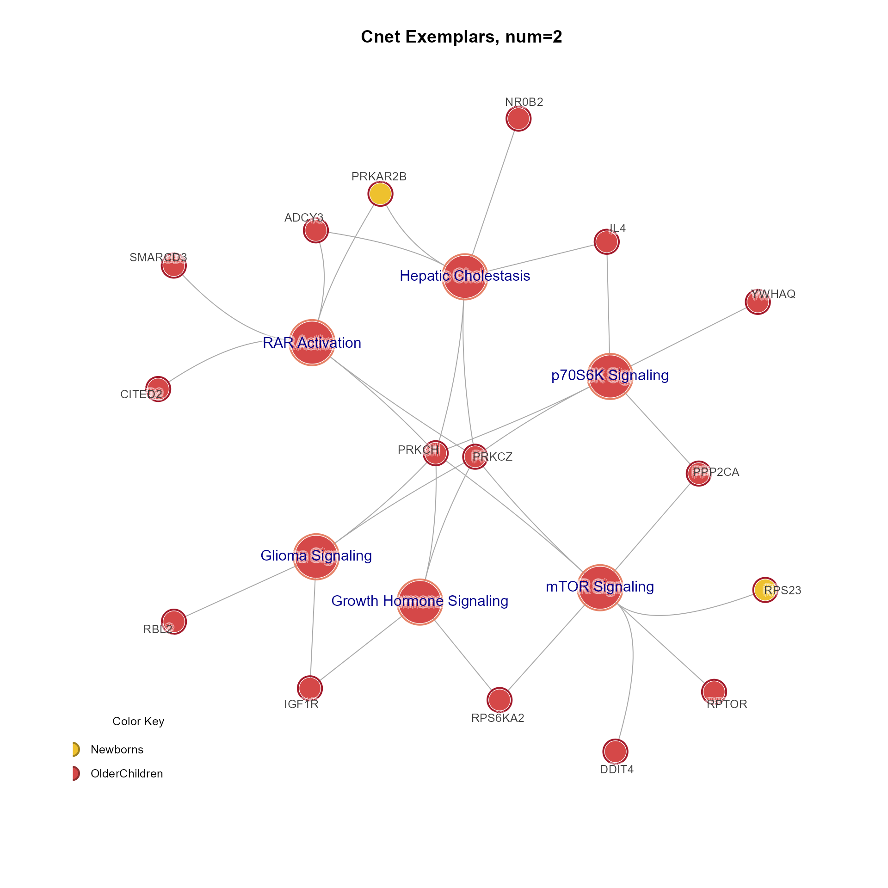
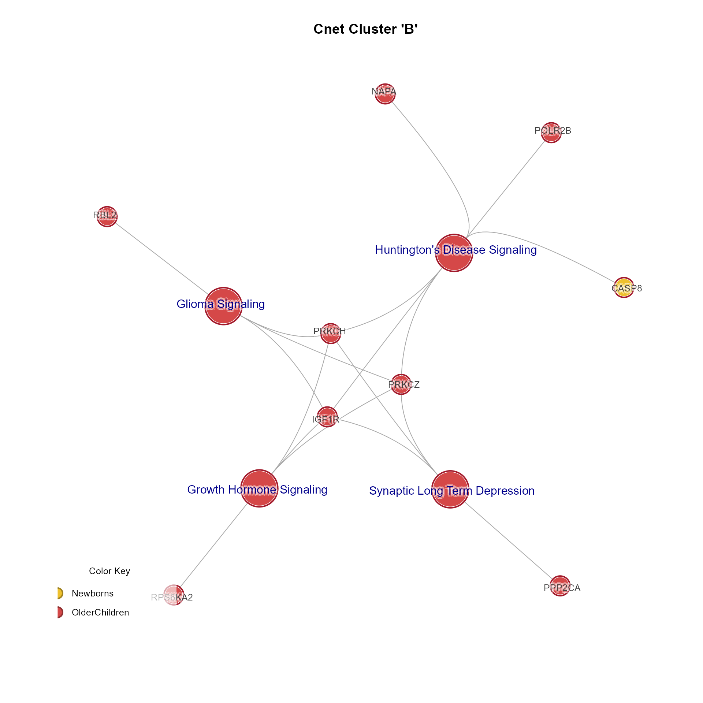

Mem S4 class, accessors, getters, and setters
Source:R/AllClasses.R, R/methods-MemPlotFolio.R
MemPlotFolio-class.RdMem class containing results from multiEnrichMap(),
current class version "1.0.0".
Usage
list_to_MemPlotFolio(mpf)
MemPlotFolio_to_list(x, ...)
# S4 method for class 'MemPlotFolio'
show(object)
# S4 method for class 'MemPlotFolio'
Clusters(x)
# S4 method for class 'MemPlotFolio'
GeneClusters(x)
# S4 method for class 'MemPlotFolio'
thresholds(x)
# S4 method for class 'MemPlotFolio'
metadata(x)
# S4 method for class 'MemPlotFolio'
Caption(x, ...)
# S4 method for class 'MemPlotFolio'
CaptionLegendList(x, ...)
# S4 method for class 'MemPlotFolio'
EnrichmentHeatmap(x, do_plot, ...)
# S4 method for class 'MemPlotFolio'
GenePathHeatmap(x, do_plot, ...)
# S4 method for class 'MemPlotFolio'
CnetCollapsed(x, type, do_plot, ...)
# S4 method for class 'MemPlotFolio'
CnetExemplar(x, num, do_plot, ...)
# S4 method for class 'MemPlotFolio'
CnetCluster(x, cluster, do_plot, ...)Arguments
- mpf
listoutput frommem_plot_folio()- x
MemPlotFolioobject- ...
additional arguments are ignored
Value
list_to_MemPlotFolio() returns a MemPlotFolio S4 object,
from 'list' or 'MemPlotFolio' input.
MemPlotFolio_to_list() returns a list
Clusters(MemPlotFolio) returns a list of character vectors,
named by cluster.
GeneClusters(MemPlotFolio) returns a list of
character vectors, named by cluster.
thresholds(MemPlotFolio) returns a list of
thresholds used with mem_plot_folio().
metadata(MemPlotFolio) returns a list of
metadata used with mem_plot_folio().
metadata(MemPlotFolio) returns a character string
with caption summary used with mem_plot_folio().
Multiple lines are delimited by newline characters.
metadata(MemPlotFolio) returns the caption summary
in the form of ComplexHeatmap::Legends suitable to draw()
as R grid graphics.
EnrichmentHeatmap(MemPlotFolio) returns a
ComplexHeatmap::HeatmapList when do_plot is TRUE (default),
ComplexHeatmap::Heatmap when do_plot is FALSE, containing
enrichment P-values by enrichment, and pathway rows in clusters.
GenePathHeatmap(MemPlotFolio) returns a
ComplexHeatmap::HeatmapList when do_plot is TRUE (default),
ComplexHeatmap::Heatmap when do_plot is FALSE, containing
the genes-pathways incidence matrix and associated caption.
CnetCollapsed(MemPlotFolio) returns an igraph object invisibly,
with Gene and Set nodes representing the collapsed pathway clusters.
CnetExemplar(MemPlotFolio) returns an igraph object
with Gene and Set nodes for the 'num' number of exemplars per cluster.
CnetCluster(MemPlotFolio) returns an igraph object invisibly,
using all pathways in the cluster defined with argument cluster.
Functions
list_to_MemPlotFolio(): Convert legacylistto S4MemPlotFolioMemPlotFolio_to_list(): Coerce S4MemPlotFoliotolistformatshow(MemPlotFolio): Show summary of a MemPlotFolio object, dimensions defined by genes, sets, enrichments.Clusters(MemPlotFolio): Returns the order of gene sets fromMemPlotFolioresults as alistnamed by pathway cluster, containingcharactervectors of pathway gene sets.GeneClusters(MemPlotFolio): Returns the order of genes fromMemPlotFolioresults as alistnamed by gene cluster, containingcharactervectors of genes.thresholds(MemPlotFolio): Returns the thresholds used withMemPlotFolio.metadata(MemPlotFolio): Returns the metadata used withMemPlotFolio.Caption(MemPlotFolio): Returns the caption summary forMemPlotFolio.CaptionLegendList(MemPlotFolio): Returns the caption summary forMemPlotFolioasComplexHeatmap::Legends.EnrichmentHeatmap(MemPlotFolio): Draws the enrichment heatmap fromMemPlotFolioresults.GenePathHeatmap(MemPlotFolio): Draws the gene-pathway set heatmap fromMemPlotFolioresults.CnetCollapsed(MemPlotFolio): Draws the Cnet collapsed network fromMemPlotFolioresults. Note that '...' arguments are passed tojam_igraph()andmem_legend()whendo_plot=TRUE. Argumenttypecan be:type=''(default) to use cluster titletype='set'to use abbreviated pathway namestype='set2'to use abbreviated pathway names, with hidden gene labels
CnetExemplar(MemPlotFolio): Draws the Cnet exemplar network fromMemPlotFolioresults for 'num' exemplar per cluster. Note that '...' arguments are passed tojam_igraph()andmem_legend()whendo_plot=TRUE.CnetCluster(MemPlotFolio): Draws the Cnet network fromMemPlotFolioresults for a specific cluster. Note that '...' arguments are passed tojam_igraph()andmem_legend()whendo_plot=TRUE.
See also
Other jam Mem utilities:
Mem-class,
fixSetLabels(),
mem2cnet(),
mem2emap()
Other MemPlotFolio:
check_MemPlotFolio(),
score_gene_path_clusters()
Examples
# list_to_MemPlotFolio examples
data(Memtest)
mpf <- mem_plot_folio(Memtest, do_plot=FALSE,
do_which=c(1, 2, 3, 4), returnType="list")
Mpf <- list_to_MemPlotFolio(mpf)
data(Memtest)
mpf <- mem_plot_folio(Memtest, do_plot=FALSE, returnType="list")
Mpf <- list_to_MemPlotFolio(mpf)
# enrichment heatmap
EnrichmentHeatmap(Mpf, column_title="Enrichment Heatmap")

# Gene-path heatmap
GenePathHeatmap(Mpf, column_title="Gene-Path Heatmap")

# Cnet collapsed sets
CnetCollapsed(Mpf, type="set", use_shadowText=TRUE, main="Cnet Collapsed Sets")

# Cnet exemplar plot
CnetExemplar(Mpf, num=2, use_shadowText=TRUE, main="Cnet Exemplars, num=2")

# Cnet cluster plot
CnetCluster(Mpf, cluster="B", use_shadowText=TRUE, main="Cnet Cluster 'B'")
